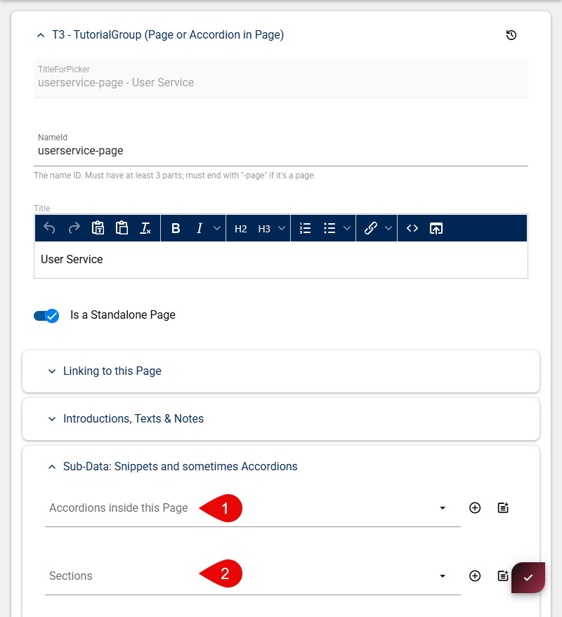

Create Snippets (Page Content)
With the new page in place you can start adding page content by creating new Snippets
Either add Sections or Accordions inside the Page, based on your conent. If your content is nested better structured then go for accordions - if your content is straight forword and lean go with single sections.
note: if you have accorionds the sections will be added automatically inside the accordion sections
Creating an Accordion
Fill in the following information:
| Field | Description | Example |
|---|---|---|
| NameId | Identifier. The NameId must end with -basic as it is a convention | userservice-basic |
| Title | Visible title on page | How to Use the User Service |
| Intro | Visible Description on page | This demonstrates how to... |
Scrolling to the bottom, you will again find the Sub-Data: Snippets and sometimes Accordions Group.
Here you can add a newsted Accordion or start with adding actual sections (snippets).
Create as many Snippet Sections as you need:
A Snippet Section should contain the following information:
| Field | Description | Example |
|---|---|---|
| TutorialID | Identifier. such as type + name + functionality. |
service-user-get-current-user |
| Title | Visible title on page | How to Use the User Service |
| Tutorial Type | .cshtml | - |
The actual Snippet will be a Razor (.cshtml) or a Formula, depending on your Tutorial Type choice.
Your new Tutorial Snippets files should be placed at: D:\2sxc Apps Dev\Web\Portals\tutorial-razor\2sxc\Tutorial-Razor\tutorials
Or seee them here: Tutorial-Razor tutorials folder
Here you will need to create a new folder. The nameing for both file and folder need to match the TutorialID you specified earlier.
So for service-user-get-current-user:
- the folder would be:
service-user - the file would be:
Snip-Get-Current-User.cshtml

Repeat this for all remaining files.
If you encounter such an error - you probably misspelled the file-name/path.